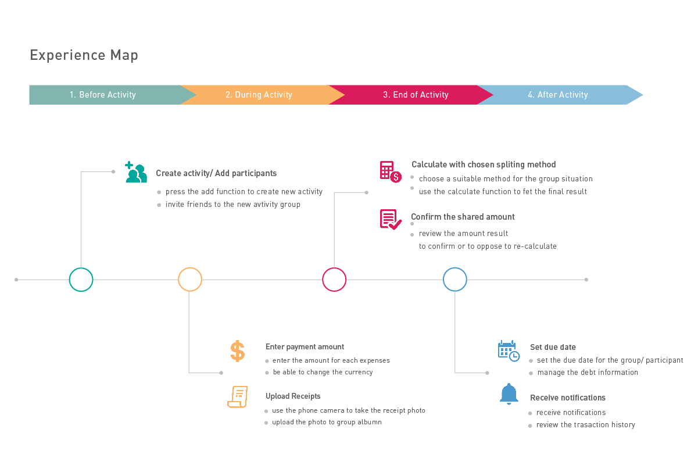
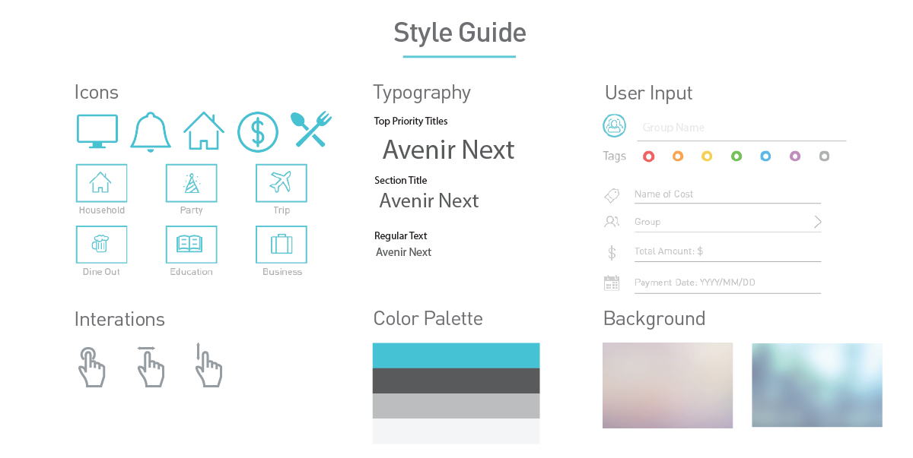

Billyo
CONTEXT: UI&UX Design
TYPE: Team Project
ROLE: UX Designer
Description
Billyo is an interactive mobile application designed for people who need to track and sort shared bills and expenses with their friends, for both short term or long term uses. This interactive system supports function to split bills evenly or in proportion according to preference or data recorded. It aims to help user groups systematically divide and settle all sorts of bills, and to boost convenience and emotional acceptance during the operation, making group expense between friends as argument-free as possible.
Design Context
This application is designed for such everyday scenarios and needs. To be detailed, we expect that, to our long-term user, it will be used to track household bills between roommates, couples. but the short-term user will use it to track and sorting bills for group activities(e.g.group vacation, dine out together).
Tools
Axure / Photoshop / Illustrator
Skills
Axure / Illustrator / UI & UX design
Design Process
Stage 1: Concept Ideation & Market research
In this brainstorming phase, our team member had a series of group meeting to confirm major contents of domain such as primary user, place, context and technology.
Domain of App
- Primary User: people who need to track and sort shared bills and expenses with their friends and families.
- Place: school, workplace, restaurant, stores, hotel, outdoor field, etc.
- Context:
- Before purchase and payment: track and sort bills
- During purchase and payment: split bills
- After the purchase: remind user about unpaid debts.
- Technology:Mobile Smartphone with camera function, IOS and Android system
Stage 2: Initial UX Design
Through doing abundant research toward this industry and daily activity of potential users, we gathered some useful information and had a better understanding on user's need and issues.
Main Concerns of user
- Will the bill be splited quickly and easily?
- Will the app remind me with a notification page to show all of the debt?
- Can the transaction history, including the paid/unpaid debts, be checked for specific need?
After analsing user's concerns and end goals, we create a very basic experience map to imitate the paths of user interaction to see how could the app be used by user. By going through the whole progress, We found out that some factors will affect the user experience and we should pay attention to it in our design.
Factors which may affect user’s experience.
- The design toward visualization which will be used to present information and data
- Accuracy of the result.
- Voluntary or non-voluntary contribution
- Creditability of the app( Can the design of UI and function works out correct result to match different user’s needs.
After analyzing all concerns and needs from user, we created two mini Persona which can help us to get familiar with the various mental models of our users.
Stage 3: "Gray Box"
Stage 4: Visual Design
We create a style guide which include our design toward icon, color palette, interaction and so on, it can helps to enforces style and improving communication between designer and our user.
Stage 5: Testing & refinement
BillyO is designed to help users split the bills fairly when it comes to group expense, therefore our group conducted four onsite usability tests at cafe shop, mall, restaurant and home, asking the participants put themselves in the scenario where they need to split bill with others .
Four users of our target population participated in the test, none of the participants have used any sort of bill splitting application. Each individual session lasted approximately 10 minutes. We also combined the thinking aloud method when doing the test, where four participants explore the features of our application and carry out assigned tasks while being observed and voice recorded.
- Thinking Aloud + Try It Yourself
We asked users to speak out their thoughts and explain for their actions while performing the tasks in the app, in order to spot and record immediate issues that had occurred. Perspectives of team members have also be complemented into evaluation as designers’ observation - Extreme User Interview
We asked individuals with extreme unfamiliarities of apps in the same category to evaluate their experience using it, in order to examine the issues that are obvious to new users and expert users.
Testing Result for future improvement
- Aesthetics & Consistency
As the first impression that users can easily recall, the overall color scale and layout of the interface pages have met general taste for aesthetic and highlighting purpose, such as the blue used for banner, clicked tabs, selections, icons, etc. Mostly, users left positive feedbacks to the design of timeline on main pages, stating that helps for a information visualization. - Learnability
Because our application has an extensive amount of features, information is a bit overwhelming and disorganized to first-time users. Participants reflected generally that it was a bit challenging to carry out the assigned tasks without any instructions: (1) they can easily lose track of where they are in the application, (2) they also find it hard to find the page they intended to go to. - Interaction
We aimed to design and apply intuitive gestures to assist interactions between pages. For example, the gestures involves tapping for links, scrolling for vertical layout, swiping to the left or the right for window switch, delete action or process maneuver, etc. However, through user tests, It’s suggested to add status/note for each switch to improve feedback and affordance of default gestures.Otherwise, without any hint, user won’t have clue where the interface is going to bring him to next. For example, swiping the windows in group page to switch back and forth among timeline, group members and chat room.